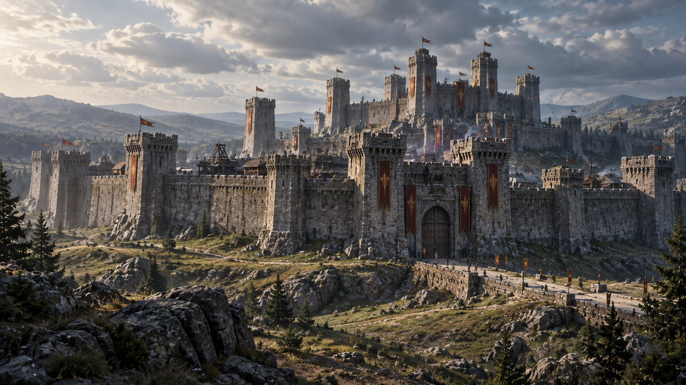
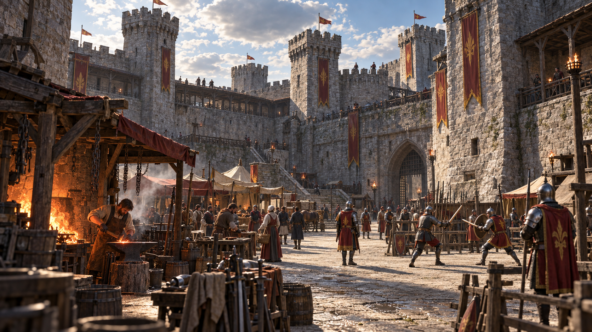
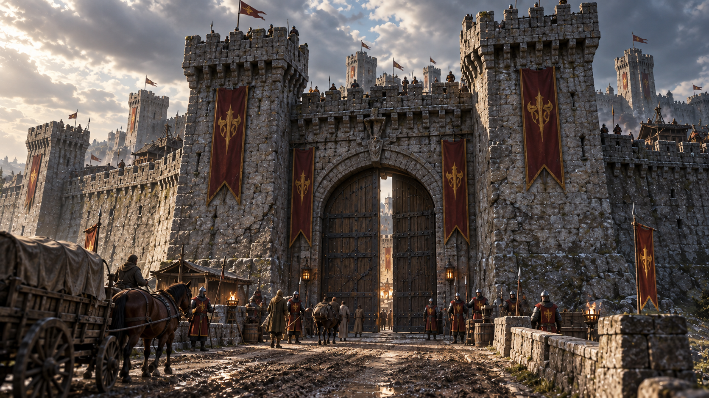

Локация / Фраустер
Крепость
Кантли
Укреплённая крепость королевства Фраустер.
Время оставило на её стенах следы, но не смогло её сломить.Архивная запись · Том I
Краткое досье
- Тип
- Крепость
- Государство
- Королевство Фраустер
- Назначение
- Размещение воинов и ресурсов
- Состояние
- Действующая крепость
- Характерная черта
- Повседневная жизнь внутри стен
I / Укрепления
Крепость Фраустера
Кантли — крупная действующая крепость Фраустера. Массивные стены и оборонительные сооружения защищают находящихся внутри людей и ресурсы.
Она остаётся военным объектом королевства, но её жизнь не ограничивается обороной.
II / За стенами
Жизнь Кантли
Кантли не похожа на пустую цитадель. Внутри крепости стоят торговые палатки, работают кузницы и кожевники. Здесь находятся воины, а рыцари проводят тренировки.
Военная служба соседствует с ремеслом, снабжением и обычным движением людей. Крепость остаётся постоянно действующим укреплённым центром.

III / Назначение
Воины и ресурсы
Кантли служит одним из мест сосредоточения воинов и ресурсов Фраустера. В крепости хранятся значительные запасы, необходимые для сил королевства.
При необходимости эти силы и ресурсы могут использоваться в более широких военных действиях Фраустера.
IV / Вход в крепость
Главные ворота
Главные ворота Кантли хранят следы прежних повреждений. Трещины на них напоминают шрамы старого гладиатора — свидетельства пережитых ударов, которые не сделали крепость слабее.
Ворота продолжают служить действующим входом. У них несёт службу вооружённая охрана.

V / Стойкость
Стены Кантли
Стены Кантли производят впечатление прочности и величия. Следы времени на камне и воротах не превращают крепость в руины: она продолжает выполнять свою функцию.